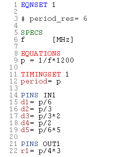

Defining the edge delays for Pin Scale standard pins
In equation based timing, timing sets are part of an equation set, and are edited within this equation set. The general format for the edge delay of a drive pin is
d<n>=<expression>
where 1 ≤ n ≤ 8 and expression is a constant or built up from constants and base and/or derived variables with the arithmetical operators.
The general format for the edge delay of a receive edge is
r<n>=<expression>
where 1 ≤ n ≤ 8 for Pin Scale boards. expression is again a constant or built up from constants and variables with the arithmetical operators.
Cycle boundary crossing
Normally, the delay will not be greater than the length of the period (test system cycle), but there are cases where it must be possible to specify a greater delay. An example is that you want to measure the propagation delay from an input to an output pin, and this delay exceeds one period. This is called "cycle boundary crossing". In some situations, for example backward searches, even a negative delay is required.
However, there is an absolute lower limit for the edge delays, which is
-(4 * test_system_cycle_length),
and an absolute absolute upper limit, which is
12 * test_system_cycle_length.
Related firmware commands
You can use the ETDS command to retrieve and change the delays. However, this is only a temporary change of the runtime values, which does not modify the values of the timing set.
Example
The following figure shows an equation set for standard pins as displayed in the timing equation editor of SmarTest.

Here the edge delays are defined with the derived variable p,
which in its turn depends on the base variable f.
p
stands for the period, and f for the frequency. f must be
given a value in a timing specification (see Data organization of equation based timing), which is normally
defined in the spec tool of SmarTest (see the Test Setup manual). If f
is set to 100, then p is 12, and d1, d2,
d3, d4, and d5 of IN1
are set to 2, 4, 8, 6, and 10 respectively.
Functional changes
- Introduced before SmarTest 6.3.2